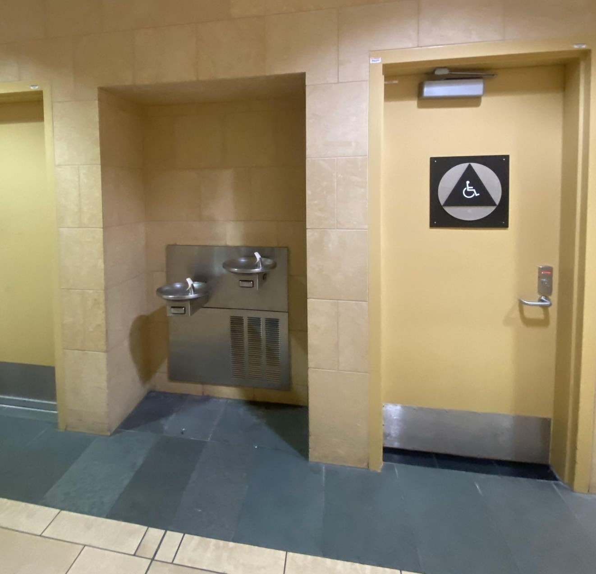

दोस्रो तल्ला TSA/सुरक्षा र प्रस्थान हो। यसलाई दुई खण्डमा विभाजन गरिएको छ र एउटा खण्डबाट अर्को खण्डमा पुग्नको लागि, तपाईंले या त गर्नुपर्छ
तल जानुहोस्
दोस्रो तलामा बाहिर हिंड्नुहोस्
हामी टर्मिनल २ मार्फत एयरपोर्टमा प्रवेश गर्न सिफारिस गर्छौं।
यदि तपाईं एयरपोर्टको सामना गर्दै हुनुहुन्छ भने:
संयुक्त, JetBlue, डेल्टा प्राप्त गर्न बायाँ तिर जानुहोस्
दायाँ तिर जानुहोस्: अलास्का, अमेरिकी
तल जानुहोस् र दायाँ तिर हिड्नुहोस् (लगभग 10 मिनेट) पुग्नको लागि: टर्मिनल 1 (फ्रन्टियर, स्पिरिट, दक्षिणपश्चिम)
यो एक विमान टिकट अनलाइन खरिद गर्न राम्रो छ। केवल केही एयरलाइन्सहरूले तपाईंलाई काउन्टरमा टिकट किन्न दिनेछन्, र त्यहाँ सामान्यतया शुल्क लाग्छ। टिकट काउन्टरहरूले नगद स्वीकार गर्दैनन्।
एस्केलेटर नजिकैको टर्मिनल २ मा एयरपोर्टको वाइफाइ बलियो छ। उडान टिकट बुक गर्दा राम्रो इन्टरनेट जडानको लागि त्यहाँ जानुहोस्।
स्यान डिएगो अन्तर्राष्ट्रिय विमानस्थलको स्थिर नक्सा १ हेर्न क्लिक गर्नुहोस्
सान डिएगो अन्तर्राष्ट्रिय विमानस्थलको स्थिर नक्सा २ हेर्न क्लिक गर्नुहोस्
स्वयंसेवकहरू
स्वयंसेवकहरू बिहान (8am-11am) वा बेलुका (5pm-10pm) एयरपोर्टमा आउन सक्छन्। तिनीहरू पूरै एयरपोर्ट मार्फत हिंड्नेछन्
स्वयंसेवकहरूसँग नि:शुल्क खाना र कपहरू हुनेछन्, जसलाई तपाईंले एयरपोर्टको कुनै पनि पानीको झरनामा पानीले भर्न सक्नुहुन्छ।
स्वयंसेवकहरूसँग नि:शुल्क लुगा, सरसफाइका वस्तुहरू (टूथब्रस, भिजेको वाइप, महिनावारीका उत्पादनहरू, डायपर), कम्बलहरू पनि हुन सक्छन्।
रोलिङ वैगन वा कार्ट भएका मानिसहरूलाई खोज्नुहोस्, तिनीहरूले नीलो वा हरियो भेस्ट लगाएका हुन सक्छन्
स्वयंसेवकहरूले प्रश्नहरूको जवाफ दिन सक्छन् जस्तै: तपाईंको विमान कहाँ फेला पार्ने, तपाईंको बोर्डिङ पास/टिकट कसरी प्राप्त गर्ने, तपाईंको उडान हुँदा
के तपाई एयरपोर्टमा रातभर बस्दै हुनुहुन्छ? कृपया हामीलाई जानकारी दिनुहोस्। हामीसँग तपाइँको लागि रातभर सुत्ने ठाउँ हुन सक्छ
के तपाई बिरामी महसुस गर्नुहुन्छ वा चिकित्सा मद्दत चाहिन्छ? स्वयंसेवकलाई भन्नुहोस् र तिनीहरूले तपाईंलाई मद्दत गर्ने प्रयास गर्नेछन्
के तपाईंको उडान रद्द गरिएको थियो र तपाईंलाई क्याथोलिक परोपकारी संस्था वा यहूदी परिवार सेवाहरूद्वारा मद्दत गरिएको थियो? हामी तपाईंलाई CC वा JFS सँग जडान गर्न सक्छौं
बाथरूम
बाथरुमहरू एयरपोर्ट भरि अवस्थित छन्
एयरपोर्टमा एउटा हलवे जहाँ बाथरूमहरू फेला पार्न सकिन्छ महिलाको बाथरूमको लागि लोगो पुरुषहरूको बाथरूमको लागि लोगो एकल बस्ने बाथरूमको लागि लोगो। यो बाथरुम गतिशीलता समस्या भएका मानिसहरू, साना बच्चाहरू, वा अन्य सामान्य पुरुष र महिला बाथरूमहरूमा असहज हुने मानिसहरूका लागि उपयुक्त छ।
पानीको झरना प्रायः बाथरूमको छेउमा फेला पार्न सकिन्छ।

यो तस्बिरको बाँयामा पानीको झरना छ। यस तस्बिरको दायाँमा एकल-व्यवसायी बाथरूम छ।
शौचालयमा भिजेको वाइपहरू फ्लश नगर्नुहोस्
इलेक्ट्रिकल आउटलेटहरू
एयरपोर्ट भर आउटलेटहरू छन्। पहिलो तलामा थप आउटलेटहरू छन्
तपाईं पहिलो तलामा कुर्सीहरूमा सुत्न सक्नुहुन्छ
एयरपोर्ट स्टोर र रेस्टुरेन्ट
अधिकांश पसल र रेस्टुरेन्टहरू साँझ 8 बजे बन्द हुन्छन्
टर्मिनल १ मा ज्याक इन द बक्स भनेको अन्तिम (८ बजे) बन्द हुने रेस्टुरेन्ट हो।
विमानस्थलले चुरोट बिक्री गर्दैन
तपाईले ज्याक इन द बक्सको नजिक टर्मिनल १ को स्टोरबाट सिम कार्ड किन्न सक्नुहुन्छ
पैसा
विमानस्थलमा कुनै पनि मुद्रा विनिमय छैन
एयरपोर्टमा वेस्टर्न युनियन छैन। तपाईंले वेस्टर्न युनियनमा जानको लागि ओल्ड टाउन स्टेशनको शटलमा जानुपर्छ।
त्यहाँ "रेडी कार्ड" मेसिन भनिन्छ। तिनीहरूले तपाइँको नगद $ 6 शुल्कको लागि प्रि-पेड डेबिट मास्टरकार्डको लागि साटासाट गर्नेछन्
त्यहाँ जम्मा छवटा रेडी स्टेशनहरू छन्, र तिनीहरू टिकटिङ काउन्टरहरू नजिकै अवस्थित छन्। एकपटक तपाईंसँग प्रि-पेड डेबिट मास्टरकार्ड भएपछि, तपाईंले टिकटिङ काउन्टर वा अनलाइनमा आफ्नो हवाईजहाजको टिकट खरिद गर्न सक्नुहुन्छ।
रेडी स्टेसन मेसिन प्रयोग गर्नका लागि निर्देशनहरू:
स्टेशन खोज्नुहोस् र सुरु गर्न स्क्रिन छुनुहोस्।
एउटा महत्त्वपूर्ण जानकारी सन्देश स्क्रिनमा देखा पर्नेछ, जारी राख्न स्वीकार क्लिक गर्नुहोस्। प्रिपेड डेबिट कार्डमा अधिकतम $ 1,000 लोड गर्न सकिन्छ।
प्रिपेड डेबिट कार्ड खरिद गर्न र नगद लोड गर्न "किन्नुहोस्" मा क्लिक गर्नुहोस्।
मेसिनमा नगदको इच्छित रकम घुसाउनुहोस्। यदि तपाइँ $ 100 प्रविष्ट गर्नुहुन्छ भने, कार्ड ब्यालेन्स $ 94 हो।
कार्डमा रहेको रकम सही रकम हो भनी पुष्टि गर्नुहोस्।
यदि रकम सही छ भने, "DONE - ISSUE CARD" बटनमा क्लिक गर्नुहोस्।
यदि तपाईं थप पैसा थप्न चाहनुहुन्छ भने, "ADD MORE MONEY" बटनमा क्लिक गर्नुहोस्।
लेनदेन पूरा भयो। कार्ड लिनुहोस्।
दुबै टर्मिनलहरूमा एटीएमहरू छन्
एयरलाइन टिकट काउन्टरहरूले नगद स्वीकार गर्दैनन्
आश्रय
यदि तपाईंसँग एयरलाइन टिकट छैन र बस्नको लागि ठाउँ चाहिन्छ भने, सबैभन्दा नजिकको स्यान डिएगो आश्रय
स्यान डिएगो (नील गुड) डे सेन्टर
299 17 औं स्ट्रीटमा
छ ।
स्यान डिएगो (नील गुड) डे सेन्टर सोमबार देखि शुक्रवार, 7 बजे देखि 3 बजे सम्म खुला छ
ठाउँ सीमित छ - ठाउँ सुरक्षित गर्न बिहान ६ बजेसम्म त्यहाँ पुग्ने प्रयास गर्नुहोस्।
स्यान डिएगो (नील गुड) डे सेन्टरमा शौचालय, लुगा धुने र सेल फोन चार्ज गर्ने क्षेत्रहरू छन्।
एयरपोर्टबाट स्यान डिएगो (नील गुड) डे सेन्टरको लागि निर्देशनहरू